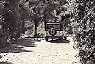

issue 12
|
The Black Hole of the Web
http://www.ravenna.com/blackhole.cgi?1 This site is what the Web is all about. We're not going to actually tell you what you'll find here--you must rely on your rugged sense of adventure and insatiable curiosity to see you through. Just enter in the URL--you know the routine--and in seconds (or perhaps minutes, depending on your modem), you'll discover what many scientists and theorists have been talking about for years. Or maybe not. Maybe this is the biggest waste of time to ever grace the Web. Check it out for yourself, and we'll see you upon your return, that is, if you ever come back. |
|
Bud Uglly Web Page Design
http://www.wwwvoice.com/bud/bud.html Masquerading as an advertisement for a Web page design firm, the Bud Uglly home page plugs the worst possible Web page features, such as awful Java scripts and obnoxious blinking text. The site is chock-full of typos, seamed backgrounds and hysterically bad marketing mumbo-jumbo written as though it were sincerely targeting companies or organizations coveting a "presence" on the Web. Bud Uglly offers advanced "surch" forms, the "FAK" and custom-made animated "gips" for your perusal. "And remember if it's not bud uglly, then you probly paid to much!" |
|
The Dr. Hannibal Lecter Fan Club
http://www.cyberstation.net/~mariah/lecter.html You have to wonder how much free time people have on their hands, especially after stumbling across such online content as the Dr. Hannibal Lecter Fan Club site. The cannibalistic serial killer, created from the inclement mind of author Thomas Harris (Red Dragon and Silence of the Lambs), is the focus of this padded-cell wallpapered Web site. After browsing through the Lecter biography, an uncountable number of links, quotes, sound bytes, letters from Lecter and more, you'll be left drawn, depressed and in need of some MAO inhibitors yourself. Excellent, although incredibly grim. |
|
Overheard Conversations
http://www.nicedog.com/works/overheard.html There's nothing like getting and giving some good, juicy gossip with friends, family and co-workers. The Conversations Overheard Web page, a section of the larger and quite interesting nicedog.com home page, allows visitors to share silly stories and strange remarks that may have been overheard at the office, on the street, in nightclubs or anywhere, with Netizens worldwide. Even if you walk with your eyes to the ground and your ears tucked away, you can enjoy this site by perusing other people's submissions. |
|
Bad Teen Angst Poetry
http://www.cyberperk.com/angst/angst.htm "On you go on your happy way. My dreams reduced to nothingness. In vain. All in vain." Shakespeare it ain't. But in the midst of a nasty breakup, a heart-wrenching crush or a prom night zit, many teens can find solace by filling their spirals with such verse. This is bad teen angst poetry and a Web site has been set up to collect the tortured musings of teenagers. This public forum allows teen authors the opportunity to "ultimately free themselves from said poetry's evil grip." The site also provides poets an opportunity to submit their work anonymously and serves as an excellent lyrical resource for musicians trying to cash in on the success of Jewel. |
|
Walter Spit in My Food
http://www.dnaco.net/~timh/walter.html Subtitled, "The Most Trusted Man In America reveals himself to be a spiteful, petty old man with an attitude problem," this site is the story of how Walter Cronkite ruined the Webmaster's dinner at a Moroccan restaurant at Epcot Center. While the story itself is amusing (and not entirely true), the show-stopper at this site is the Java applet of Walter actually hocking an animated lugie. Don't miss the bonus section: "What Crawled Up This Guy's Ass?" in which the site's creator receives bizarre mail from an anti-Gates lunatic. |
|
The Surrealist Compliment Generator
http://pharmdec.wustl.edu/cgi-bin/jardin_scripts/SCG Many sausages have known things before you had time to react. However, the Surrealist Compliment Generator is the Ayatollah of Confusion on the night of Diwaali. Compared to other sites, an ocean-going tin of cross-eyed mussels could never match the melodious burblings of your sister's husband. Its presence reminds one of a blind jackal, eternally dependent on misguided archbishops to provide instruction in bowling. Ever so slightly, the site reminds me of a staircase falling exotically into a sea of spilled macaroni. In short, the Generator is as dazzling as a pregnant cow attired in electrical sockets. |
|
Driveways of the Rich and Famous
http://www.cris.com/~Driveway  While Robin Leach takes viewers on a tour of celebs' fabulous mansions and villas, John Cunningham's public-access TV show, and this complementary Web site, takes you no further than their driveways. You'll thrill to the sights of Madonna's, Brad Pitt's and yes, even Ned Beatty's asphalt. Although Cunningham is usually told to get lost by the celebs or their entourage, these encounters in and of themselves make for fascinating fodder. Even better are Cunningham's interviews with groupies and neighbors lingering near the driveways. Don't miss the transcript of the host's encounter with a scary woman in muumuu outside Pee Wee Herman's gate. |
|
Jimmy's Pageant Page
http://www.angelfire.com/pages7/pageants/index.html This page is lovingly devoted to the "non-winners" of beauty/scholarship pageants; the actual word "loser" is scrupulously avoided. The Webmaster, Jimmy Steele, opines, "Some people have negative stereotypes about beauty queens, but we pageant fans know better." In proof, he offers "a compilation of quotes: intelligent, witty and clever things said by actual pageant contestants." (FYI, they weren't all that witty!) We think celebrating pageantry is pretty normal; what's weird is the extensive tabulation and rankings provided that translate female intelligence, wit and poise into numerical quantities. This page is rich, well-researched and a good source of information for those involved with this pursuit. But we do find Jimmy's characterization of anti-pageant activists as "snotty" just a bit unkind. |
|
Prozac Pez page
http://www.sfo.com/~costanos/ProzacPez/index.html The Prozac Pez page is funnier as a concept than in its execution, but nonetheless we're suckers for Pez-based humor. The concept behind the Prozac Pez page is that the anti-depressant drug would be that more effective if dispensed from Pez heads. The site's creator has even customized his own Prozac-Pez dispensers to include such contemporary figures as Rush Limbaugh ("It has a double wide body that can only be filled on the far right"), Kato Kaelin and Barney Fife. Is this site some sly commentary on the placebo effect of Pez on depression or is the site's creator advocating increased access to Prozac? Who knows, just smile and type in the next URL. |
|
Broccoli Town, USA
http://www.broccoli.com In Broccoli Town there is no dessert until you finish all of your vegetables. While it first comes across as a reformatory for children who won't eat their vegetables (that, or George Bush's personal hell), Broccoli Town is truly a heartfelt tribute by Mann Farms to the "Crown Jewel of Nutrition." At this site you can learn cooking tips, study at the Broccoli Institute, play with your food in the Kid's clubhouse and read the touching story of how young sprouts grow up to become your dinner salad. Cauliflower must be getting very jealous of all this attention. |
|
Wade's Photobooth Gallery
http://www.cris.com/~Wadet/home/core.shtml One day, while riding London's "tube," Webmaster Wade Tinney had an epiphany. What it was is a mystery, but Tinney says it eventually drove him to dedicate his artistic energies toward capturing and posting pictures taken in photobooths (those WalMart Polaroid huts that Americans use to snap four quick shots of themselves) to the Web. Tinney convinced all of his "hipster" friends and family to squeeze into photobooths for a few pictures and then answer a cheesy questionnaire, which he also posted on the Web. The gallery contains a bunch of entertaining, groundbreaking images that are surely at the forefront of photobooth art (with laconic criticism, Tinney even interprets them for the reader). You can also submit your own masterpieces after your next trip to the mall. |
|
Mr. Frog's Psycho-Delic Trip
http://www.angel.net/~vanguard/shocking/roadkill.html You shouldn't have eaten the mushrooms. Now you, a.k.a. Mr. Frog, need to jump your way across a scrolling game screen of hallucinatory nemeses like bloodied chefs and giant dragonflies. This shockwave application is an exercise in frustration, as the game doesn't run all that well. Surprise. This bad trip is worth a look though, if only for the killer cows. |
|
|